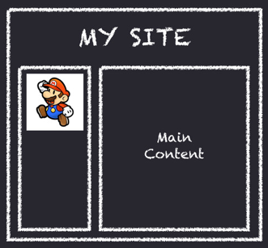

Responsive Design with PBS
- Geoff Bishop - Product Manager, PBS
- Dave Ackerman - Designer/Front-End Developer, Modus Create
- @gabishop - @dmackerman

Background
- Geoff Bishop - Product Manager @PBS
- We have 30+ iOS Apps (Paid, Free, Games, Video, Education)
- (fairly) mature infrastructure
The Problem
- Underserving users on non-iOS platforms
- Going native = too much $$$
- Saw Responsive Design as potential vehicle for solving
Project Goals
- Be the first to offer ad-supported feature-length video on the mobile web browser
- Serve that video as fast and reliably as Vimeo & Youtube
Organizational Challenges
- Great App stack (Python/Django), but relatively immature APIs
- Development all time-shifted
- Designers not trained on CSS (yay mocks!)
The Plan
- Content Inventory
- Started with mobile-only breakpoints, to avoid the epic blow-it-all-up project
- Train as we go
And now here's techie bits
"Mobile First"
- Unfortunately for existing projects, mainly a pipedream.
- Think about your content strategy.
- A dedicated mobile website could be a better, more efficient solution.
Learn to love your devices
even the shitty ones
Is responsive design right for me?
- Much harder to make an existing project responsive.
- Think about your content strategy.
- A dedicated mobile website could be a better, more efficient solution.
Your website, or app, probably isn't as simple as this:
Design Challenges
- Dynamic content, content wrapping, font scaling
- On mobile,
:hoveris no longer relevant. - HTML source order, content reflowing
- Mobile browsers use whatever font they want
- Navigation paradigms across platforms
Users don't do this:
Resizing the browser is not a user interaction!
"3 pillars" of responsive design.
- Media Queries
- Flexible Images
- Flexible Grids
Grid is a misleading term. Not every responsive site has to be built on a grid.
Iterative Workflow
What worked well for us: (may not work well for you)
- Have developers stub out HTML/CSS prototypes
- TEST your prototypes across devices, find out where it breaks
- Circle back with designers, reference the style guide, clean up visuals
- TEST your prototypes across devices, find out where it breaks
If it’s layout prototype it.
...on real devices to clarify changes in context and the impact of naive capabilities and viewport conditions
If it’s visual design mock it up
...but then prototype to determine performance, impact of native fonts and em values, viewport conditions etc.
PSDs are...
- Slow to create
- Static
- Hard to quickly iterate on
- Don't show web interactivity
There is too much interactivity and too many possible screen sizes to make flat design comps workable!
The Ideal Front-End Developer
- Understands design principles
- Knows when a breakpoint should be added. Adds it.
- Circles back with the designer for design related questions.
Ok, so what do designers deliver to develoeprs?
A style guide!
You can make one of those with Pattern Primer!
Technology "Stack" & Tips
- Building a website responsively builds on fluid width principles + breakpoints.
- Leverage emerging JS/CSS strategies
Use SASS + Compass
Both invaluable tools for building modern, clean, cross-browser CSS
Convert pixel widths to percentages with SASS
$maxWidth: 1024px; // container width
.sidebar { percentage(300px/$maxWidth) }Define your breakpoints as variables
$iPhonePortrait: 320px;
$iPhoneLandscape: 480px;
$Kindle: 600px;
$iPadPortrait: 768px;
$iPadLandscape: 1024px;
@media all and (min-width: $iPadPortrait) and (max-width: $iPadLandscape) {
// code I want to only apply on these 2 devices
}
Size elements with border-box
// import Compass CSS3 libraries
import 'compass/css3';
* { @include box-sizing(border-box); }border-box sizing allows us size element widths without worrying about padding.
.leftDiv { width: 30%; float: left; padding: 2em; }
.rightDiv { width: 70%; float: left; padding: 2em; }
Use the right meta viewport tag!
meta name="viewport" content="width=device-width"Convert pixels to ems with SASS
/* Default font size in pixels if not overridden. */
$baseFontSize: 16;
/* Convert PX units to EMs.
Ex: margin-right: pem(16);
*/
@function pem($pxval, $base: $baseFontSize) {
@return #{$pxval / $base}em;
}

Use Modernizr to deal with old, crappy phone browsers
Use Respond.js to polyfill media query support for sh*t browsers.
Use Response.js to perform code block swapping, load images based on screen width, and more.
img src="lo-fi.png" data-src481="medium.png" data-src1025="hi-fi.png" alt="example"data-r320="markup @ 320+" data-r961="markup @ 961+"